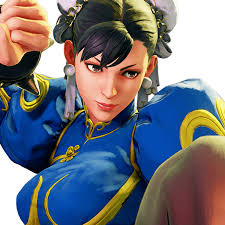

Chun-Li is the original fast character in the Street Fighter series, utilizing multiple rapid attacks rather than the slow damaging strikes of larger characters like Birdie.
 Her agile and swift movements are a favorite amongst game-players. It is interesting to note that in the early days of arcade fighting games, many other female characters played in a similarly speedy style, following the example set by Chun-Li. In previous games (Street Fighter II mainly) she was basically a charge character along with Guile and E.Honda but her style was changed in later games to give her a more technical feel as well as her trademark "speed" granted to the player.
Chun-Li was an Interpol investigator who had been searching for clues to the recent death of her father. Getting into a friendly spar with an old teacher and friend of her father's, Gen, he gives her a lead into who may have killed her father: the mysterious crime syndicate Shadaloo. Finding its leader, M. Bison, she demands he tell her what happened to her father. To her surprise, Bison attacks and makes quick work of her, then flies away, telling her that if she attacks him or comes after him again he will kill her just like her father. With tears in her eyes, Chun-Li swore vengeance. After her defeat, she soon realizes that the man whom she has a strong admiration for has defeated Bison. Her admiration for Ryu has inspired her to become stronger for when she faces off with Bison or any of her strong adversaries.